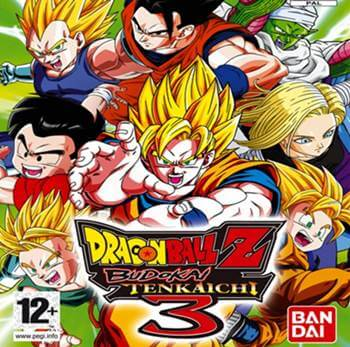
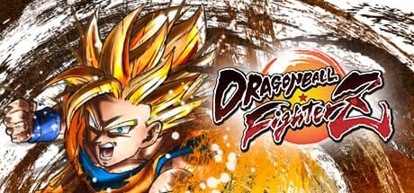
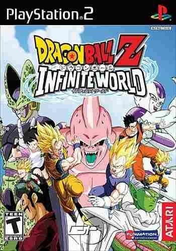
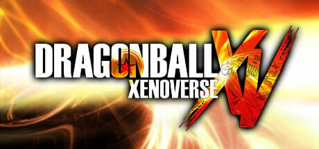

| Jogo | Nome | Plataformas | Data de Lançamento | Nota |
|---|---|---|---|---|
|  | Dragon Ball Z: Budokai Tenkaichi 3 | PS2/Wii/PC | 09/11/2007 | 9,5 |
|  | Dragon Ball FighterZ | PS4/XBOX ONE/PC | 26/01/2018 | 9,3 |
|  | Dragon Ball Z: Infinite World | PS2/PC | 04/11/2008 | 9,4 |
|  | Dragon Ball Xenoverse | PS3/PS4/XBOX 360/XBOX ONE/PC | ??/02/2015 | 8,2 |